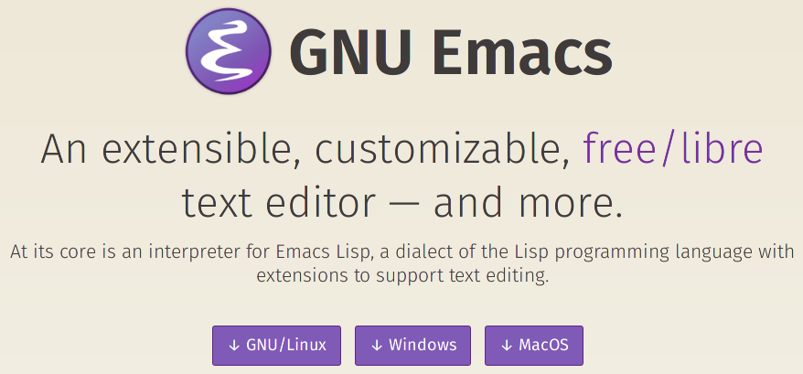
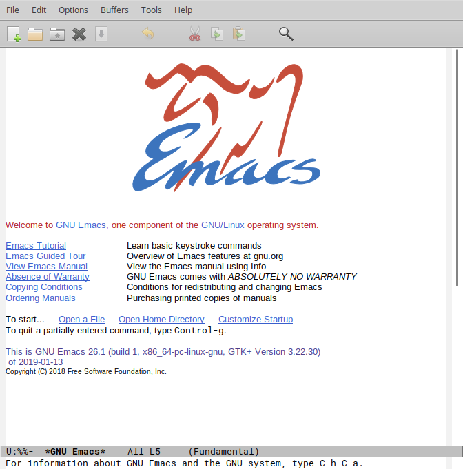
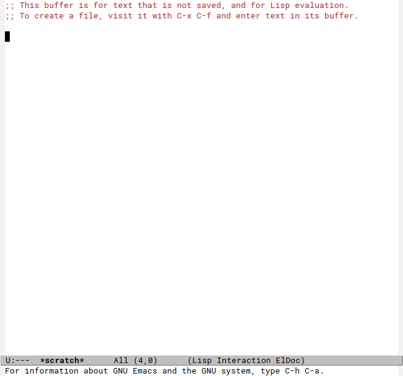
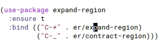
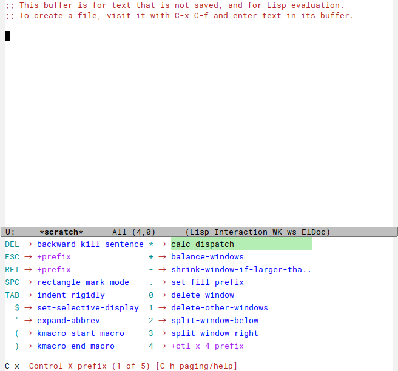
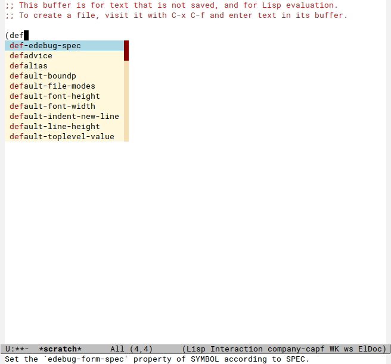
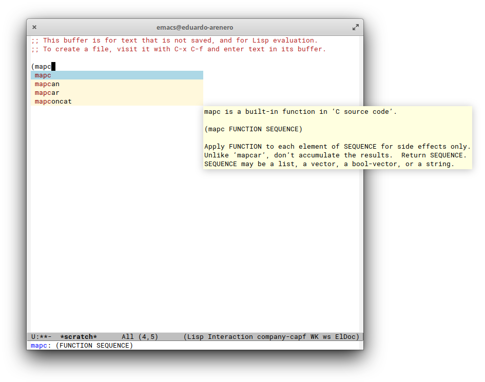
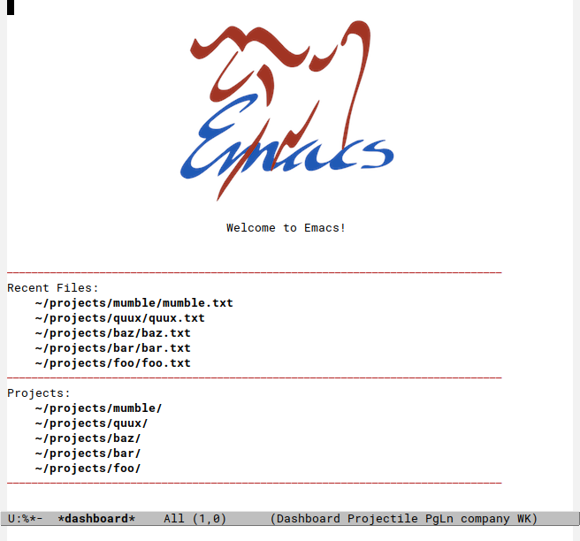
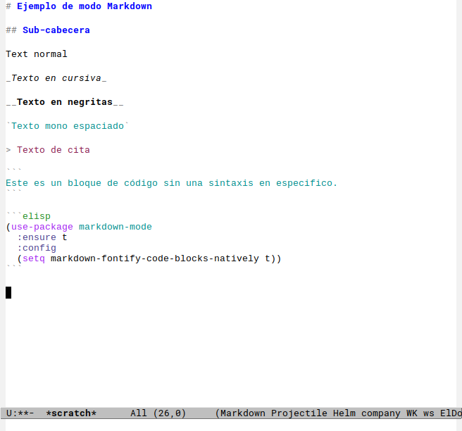

¡Configura Emacs sin hacer dieta ni dejar de comer!
Configurar emacs puede ser un broncón para una persona sin experiencia en Emacs 1 . A pesar de esto, en internet se pueden encontrar configuraciones prefabricadas que tienen sus propias idiosincrasias e incluso algunas que vienen con “baterías incluidas” (todo lo que quisieras hacer con un editor y más) como por ejemplo: Spacemacs y Prelude.
Sin embargo, hay algo sobre tener tu propia configuración que resulta atractivo. Hacer que el Emacs se convierta en tu Emacs es, en mi opinión, uno de los principios fundamentales de este editor.
En esta entrada compartiré una versión reducida de mi configuración, primero abordo cuestiones genéricas del aspecto visual y funcionalidad básica; y posteriormente muestro una configuración relativamente simple para trabajar específicamente con el lenguaje Common Lisp.
Si deseas evitarte la molestia de leer el resto de esta entrada y solo quieres probar la configuración, puedes ir directo al apéndice, en donde encontrarás el código completo listo para hacer un copy-paste.
Pero antes de comenzar, en pleno año 2019, no se puede hablar de Emacs y una configuración lista para usarse sin mencionar a Portacle. Recomiendo que si te resulta atractivo usar Emacs, pruebes usar Spacemacs, Prelude y Portacle, ya que además de ser muy útiles, sirven de inspiración.
Primero lo primero
Instala Emacs en la computadora, hay muchas maneras de hacer esto. En
sistemas operativos como Linux puedes usar los repositorios de
paquetes incluidos en tu distribución y en Mac puedes usar Aquamacs o
brew. También puedes ir al sitio oficial de
Emacs y descargarlo de ahí.
En esta entrada estoy usando Linux y optaré por esta última opción.

Es posible que si instalas Emacs desde la fuente, tengas que instalar varias dependencias. Si tienes problemas con esto, pon atención a los mensajes de error en la compilación, usualmente son bastante explícitos con respecto a lo que necesitas instalar.
Segundo lo segundo
Ya que tienes Emacs instalado, abre el editor y escribe C-x C-f
~/.emacs. Esta combinación de teclas significa que debes de mantener
presionada la tecla Control (Ctrl) y luego presionar la tecla x;
dejas de presionar ambas teclas y luego mantienes presionada la tecla
Control y luego presiona la tecla f; esta combinación invoca la
funcionalidad find-files, la cual espera que ingreses un path del
sistema de archivos de tu computadora, en este caso el path es
~/.emacs, el cual hace referencia al archivo de inicialización de
Emacs.
Lo mas probable es que este archivo esté vacío. En esta entrada se divide la configuración de Emacs en cuatro partes:
- Configuración general del editor
- Configuración de paquetes incluidos
- Instalación y configuración de paquetes de terceros
- Configuración específica para Common Lisp
Configuración general del editor
Actualizar el archivo de paquetes de Emacs
Emacs incluye su propio repositorio de paquetes, sin embargo, es conveniente incluir el repositorio MELPA, ya que incluye versiones más nuevas de la paquetería.
(require 'package)
(add-to-list 'package-archives
'("melpa" . "https://melpa.org/packages/") t)
(package-initialize)
(unless package-archive-contents
(package-refresh-contents))
En esta ultima parte, se evita refrescar el contenido de la paquetería
si ya se ha actualizado esta información. Si deseas obtener
información reciente de los paquetes puedes usar M-x
package-refresh-contents, donde M-x es usualmente presionar Alt y
x.
Límites de memoria
Si tienes una máquina perrona, puedes aumentar el umbral del recolector de basura y el umbral para advertir que el archivo en el que trabajas es “demasiado grande”.
(setq gc-cons-threshold (* gc-cons-threshold 2))
(setq large-file-warning-threshold (* large-file-warning-threshold 2))
En este ejemplo dupliqué ambos umbrales. Pero bien pudieras escribir una cantidad directa (en bytes).
Aspecto visual
El Emacs viene con algunos valores por defecto que llegan a ser intrusivos con el tiempo. Ya sea porque quitan espacio al editor, o porque son simplemente comportamientos molestos.
(global-auto-revert-mode t)
Encender este modo permite que Emacs actualice el archivo en memoria, cuando el archivo en disco haya cambiado.
(tool-bar-mode -1)
(menu-bar-mode -1)
(scroll-bar-mode -1)
Desactivar estos modos hace que la barra de herramientas, la barra de menú y la barra de scroll no sean visibles. Si estás usando Mac, puedes dejar visible la barra de menú, ya que esta se encuentra integrada al menú global del sistema operativo.
(column-number-mode +1)
Por default, Emacs muestra la línea en la que se ubica el cursor, con el comando de arriba se habilita también el número de columna.
(blink-cursor-mode -1)
(setq ring-bell-function 'ignore)
Estas dos expresiones hacen que el cursor no parpadee cuando no se está escribiendo y que Emacs no suene en ciertas situaciones, como por ejemplo, cuando haces scroll estando ya en el límite del archivo.
(setq inhibit-startup-screen t)
También quitamos la pantalla de inicio (pero no te preocupes, más adelante pondremos una mas placosa).
Antes:

Después:

Mejorar el scroll
Hacer scroll suavesito como en otros editores es algo bastante nuevo en Emacs, me imagino que con el tiempo irán mejorando esta funcionalidad. Si quieres probar este tipo de scroll puedes incluir lo siguiente en la configuración:
(pixel-scroll-mode)
(setq pixel-dead-time 0)
(setq pixel-resolution-fine-flag t)
(setq mouse-wheel-scroll-amount '(1))
(setq mouse-wheel-progressive-speed nil)
Configuración miscelánea
Aqui pongo configuración variadona, si quieres más información sobre
lo que hacen estas variables y funciones puedes usar los comandos M-x
describe-variable y M-x describe-function.
(setq load-prefer-newer t)
(fset 'yes-or-no-p 'y-or-n-p)
(setq-default indent-tabs-mode nil)
(setq tab-always-indent 'complete)
(delete-selection-mode t)
(prefer-coding-system 'utf-8)
(set-default-coding-systems 'utf-8)
(set-terminal-coding-system 'utf-8)
(set-keyboard-coding-system 'utf-8)
Preparando el manejo de respaldos
Emacs suele respaldar archivos y guardar buffers temporales en el mismo directorio que el archivo que se está editando, esto puede ser un poco molesto, sin embargo sigue siendo útil.
Lo que haremos a continuación es crear el directorio %saves-dir en
donde se almacenarán este tipo de archivos auxiliares.
(defconst %saves-dir (expand-file-name "saves" user-emacs-directory))
(unless (file-exists-p %saves-dir)
(make-directory %saves-dir))
(setq backup-directory-alist
`((".*" . ,%saves-dir)))
(setq auto-save-file-name-transforms
`((".*" ,%saves-dir t)))
Configuración de paquetes incluidos
Facilita la configuración usando use package
Hay un paquete bastante útil llamado use-package el cual nos permite
tener una configuración declarativa de otros paquetes y modos en
Emacs. En las secciones de abajo, podrás ver como se utiliza.
(unless (package-installed-p 'use-package)
(package-install 'use-package))
(require 'use-package)
Prefijo para personalizar
A veces resulta ser impredecible cuando un comando personalizado ocupa una combinación de teclas que ya está usando algun otro paquete o modo, es por eso que he tenido la costumbre de tener un prefijo para los comandos que tienen combinaciones que se me hacen dificiles de recordar y para comandos propios.
(define-prefix-command 'custom-map)
(global-set-key (kbd "C-.") 'custom-map)
(global-set-key (kbd "C-c .") 'custom-map)
Este custom-map esta asociado a C-., es decir, dejar presionada la
tecla Ctrl y luego presionar la tecla para insertar el punto.
Respaldos e historial
Aqui se pone en uso el directorio %saves-dir para almacenar diversos
tipos de archivos auxiliares.
(use-package saveplace
:config
(setq save-place-file (expand-file-name "saveplace" %saves-dir))
(setq-default save-place t))
(use-package savehist
:config
(setq savehist-additional-variables '(search-ring regexp-search-ring)
savehist-autosave-interval 60
savehist-file (expand-file-name "savehist" %saves-dir))
(savehist-mode +1))
(use-package recentf
:config
(setq recentf-save-file (expand-file-name "recentf" %saves-dir)
recentf-max-saved-items 500
recentf-max-menu-items 15
recentf-auto-cleanup 'never)
(recentf-mode +1))
Paquetes incluidos
Whitespace
Whitespace nos permite visualizar y limpiar ciertos tipos de caracteres de espacio como el tab o nuevas líneas redundantes.
(use-package whitespace
:init
(dolist (hook '(prog-mode-hook text-mode-hook))
(add-hook hook #'whitespace-mode))
(add-hook 'before-save-hook #'whitespace-cleanup)
:config
(setq whitespace-line-column 120)
(setq whitespace-style '(face trailing empty)))
Antes solia configurar este paquete para resaltar cuando una tab era introducida, pero desde que programo en Go, he preferido dejar las tabs en paz.
Paren
Paren nos permite identificar de manera sencilla el paréntesis que se está cerrando.
(use-package paren
:config
(show-paren-mode +1))
Sin modo paren:
Con modo paren:
Uniquify
Este paquete nos permite configurar cómo se muestran dos archivos que tienen el mismo nombre.
(use-package uniquify
:config
(setq uniquify-buffer-name-style 'forward)
(setq uniquify-separator "/")
(setq uniquify-after-kill-buffer-p t)
(setq uniquify-ignore-buffers-re "^\\*"))
Si tenemos abiertos los archivos /a/b/foo.txt y /a/c/foo.txt se
mostrarán en Emacs como b/foo.txt y c/foo.txt en lugar de foo.txt
<1> y foo.txt <2>.
Ansi-color
Algunos comandos de Emacs muestran su output en buffers de compilación (no necesariamente lo que se esté mostrando tiene que ver con compilación). Un ejemplo recurrente de esto es cuando se ejecutan comandos de la consola/terminal. Es usual que programas de consola muestren su output con colores, sin embargo, emacs no los muestra por default en estos tipos de buffers.
Para arreglar la situación de arriba se usa el paquete ansi-color.
(use-package ansi-color
:config (add-hook 'compilation-filter-hook
#'(lambda ()
(let ((inhibit-read-only t))
(ansi-color-apply-on-region
compilation-filter-start (point))))))
Instalación y configuración de paquetes de terceros
Projectile
Este paquete introduce el concepto de proyecto, al crear un archivo
.projectile, le informas a Emacs y a Projectile que ese subárbol en
el sistema de archivos es un proyecto. Partiendo de aqui, hay un
montón de comandos especializados para trabajar sobre proyectos. En lo
personal, el que mas utilizo es el de projectile-grep con el cual
puedes usar una expresión regular para buscar texto en el projecto
actual.
(use-package projectile
:ensure t
:diminish projectile-mode
:commands projectile-global-mode
:bind (:map custom-map
("p" . projectile-command-map))
:config
(projectile-mode +1))
Expand-region
Este paquete provee una manera de seleccionar texto, especialmente útil para lenguajes basados en Lisp. Expandir una región te permite ir incrementando el área de selección de acuerdo a la estrucura sintáctica.
(use-package expand-region
:ensure t
:bind (("C-+" . er/expand-region)
("C-_" . er/contract-region)))
Demostración de expand region:

Paredit
Paredit es un modo de Emacs que te permite navegar y editar código de Lisp como si estuvieras surfeando en un árbol. Es una herramienta poderosa y requiere su tiempo aprenderla. Hay varios recursos en linea donde puedes aprender al respecto (como aqui).
(use-package paredit
:ensure t)
Anzu
Este paquete provee una versión mas bonita de la funcionalidad por defecto para buscar texto en un buffer. Te muestra cuantas ocurrencias se encontraron y te las resalta.
(use-package anzu
:ensure t
:diminish anzu-mode
:bind (("M-%" . anzu-query-replace)
("C-M-%" . anzu-query-replace-regexp))
:config
(global-anzu-mode +1))
Magit
Este paquete te permite usar git desde Emacs, es muy potente y presenta una interfaz muy chula. Tiene tantas funcionalidades que no alcanza una entrada del blog para explicarlas, pero al igual que paredit, vale la pena aprenderlo.
(use-package magit
:ensure t
:bind (:map custom-map
("g" . magit-status)))
Rainbow-delimiters
Este es un paquete para darle un poco de atracción visual a los paréntesis que escribes. Colorea de distinta forma dependiendo de la anidación.
(use-package rainbow-delimiters
:ensure t)
Crux
Este paquete tiene funcionalidades variadas que en general me parecen
buenas. En particular crux-move-beginning-of-line permite adaptar el
comando para irse al inicio de linea dependiendo de si quieres el
inicio del renglón o el inicio de la línea de código.
(use-package crux
:ensure t
:demand
:bind ([remap move-beginning-of-line] . crux-move-beginning-of-line)
:config
(bind-keys :map custom-map
:prefix "c"
:prefix-map crux-prefix-map
("n" . crux-cleanup-buffer-or-region)
("t" . crux-visit-term-buffer)
("I" . crux-find-user-init-file)
("S" . crux-find-shell-init-file)
("s" . crux-ispell-word-then-abbrev)))
Diff-hl
Este es otro paquete que hace uso de Git (entre otros sistemas de control de versiones). Despliega en el margen izquierdo del buffer el contenido no commiteado del código.
(use-package diff-hl
:ensure t
:config
(global-diff-hl-mode +1)
(add-hook 'magit-post-refresh-hook 'diff-hl-magit-post-refresh))
Which-key
Este paquete es de los más útiles que he utilizado. Debido a que Emacs tiene un montón de comandos asociados a combinaciones de teclas y algunas de estas pueden ser algo complicadas, cualquier tipo de ayuda es agradecida.
(use-package which-key
:ensure t
:diminish which-key-mode
:config
(which-key-mode +1))
Al presionar una combinación de teclas parcial, se muestra una ventana en la parte inferior con posibles comandos a elegir.

Auto-package-update
Si te gusta mantener los paquetes actualizados constantemente, puedes
usar el comando M-x auto-package-update para mantenerte a la moda.
(use-package auto-package-update
:ensure t)
Company
Conozco de dos paquetes para tener la funcionalidad de autocompletado en Emacs:
- Company
- Auto-complete
En lo personal utilizo el modo company (aunque mi preferencia no
está informada con argumentos técnicos).

(use-package company
:ensure t
:diminish company-mode
:config
(global-company-mode))
(use-package company-quickhelp
:ensure t
:config
(company-quickhelp-mode))
El paquete company-quickhelp permite desplegar documentación de los
símbolos autocompletados.

Dashboard
Previamente se desactivó la pantalla de inicio de Emacs, ahora usando
el paquete dashboard se instalará una pantalla más útil, las cual
nos presenta archivos que se abrieron recientemente, así como
proyectos (de projectile).
(use-package dashboard
:ensure t
:config
(setq dashboard-items '((recents . 5) (projects . 5)))
(dashboard-setup-startup-hook))
Puedes cambiar la cantidad de archivos y proyectos recientes en la
lista dashboard-items.

Helm
El concepto detras de los paquetes relacionados con helm es hacer
uso de un motor de completado, búsqueda y precision de información
en común.
Desde navegar el sistema de archivos, hasta completar el comando que deseas ejecutar. Helm te provee una guía para realizar diversas actividades de forma consistente.
Esta configuración es algo dificil de entender por completo, puedes referirte a la documentación de cada paquete para más detalles.
(use-package helm-config
:ensure helm
:demand t
:bind (("C-h a" . helm-apropos)
("C-x f" . helm-multi-files)
("C-x C-f" . helm-find-files)
("C-x b" . helm-mini)
("M-x" . helm-M-x)
:map custom-map
("h" . helm-command-prefix)
("h o" . helm-occur)
("h y" . helm-show-kill-ring))
:config
(use-package helm-command)
(use-package helm-files)
(use-package helm-buffers)
(use-package helm-mode
:diminish helm-mode)
(use-package helm-multi-match)
(setq helm-ff-skip-boring-files t
helm-M-x-requires-pattern nil
helm-candidate-number-limit 100
helm-input-idle-delay 0.01
helm-split-window-inside-p t)
(helm-autoresize-mode 1)
(bind-key "<tab>" #'helm-execute-persistent-action helm-map)
(bind-key "C-z" #'helm-select-action helm-map)
(define-key minibuffer-local-map (kbd "C-c C-l") 'helm-minibuffer-history)
(substitute-key-definition 'find-tag 'helm-etags-select global-map)
(helm-mode))
(use-package helm-projectile
:ensure t
:config
(setq projectile-completion-system 'helm)
(helm-projectile-on))
(use-package helm-descbinds
:ensure t
:bind ("C-h b" . helm-descbinds)
:init
(fset 'describe-bindings 'helm-descbinds)
:config
(require 'helm-config))
(use-package helm-grep
:commands helm-do-grep-1
:bind (:map custom-map
("h g" . my-helm-do-grep-r))
:preface
(defun my-helm-do-grep-r ()
(interactive)
(helm-do-grep-1 (list default-directory) t)))
(use-package helm-ag
:ensure t)
(use-package helm-make
:ensure t
:commands (helm-make helm-make-projectile)
:bind (:map custom-map
("h m" . helm-make-projectile)))
(use-package helm-themes
:ensure t
:bind (:map custom-map
("h t" . helm-themes)))
Docker
Estos tres paquetes te permitirán:
- Comunicarte con el servicio de docker instalado en tu computadora
- Conectarte desde Emacs a un contenedor de docker
- Editar Dockerfiles con colorsitos™
(use-package docker
:ensure t)
(use-package docker-tramp
:ensure t)
(use-package dockerfile-mode
:ensure t)
Markdown-mode
Modo de Emacs para archivos Markdown, con la configuración
markdown-fontify-code-blocks-natively obtienes syntax-highlighting
para bloques de código.
(use-package markdown-mode
:ensure t
:config
(setq markdown-fontify-code-blocks-natively t))

Yaml-mode
Este paquete es para editar archivos de configuración de YAML.
(use-package yaml-mode
:ensure t)
Emacs tiene varios modos incluidos para distintas sintaxis, y otros más se pueden obtener en los repositorios de paquetes como MELPA.
Configuración específica para Common Lisp
Hook personalizado para Lisps
La función custom-lisp-hook es usada para activar algunos modos que
son útiles para todos los lenguajes basados en lisp. Esta función será
ejecutada cuando se active algun modo de lisp, puedes agregar más
modos en la lista usada en el dolist de abajo.
(defun custom-lisp-hook ()
(rainbow-delimiters-mode +1)
(paredit-mode))
(dolist (mode-hook '(lisp-mode-hook
emacs-lisp-mode-hook))
(add-hook mode-hook 'custom-lisp-hook))
Slime
Este paquete permite una interacción avanzada entre Emacs y una instancia de Lisp.
(use-package slime
:ensure t
:config
(setq inferior-lisp-program "sbcl"
slime-net-coding-system 'utf-8-unix
slime-complete-symbol-function 'slime-fuzzy-complete-symbol)
(slime-setup '(slime-fancy
slime-tramp
slime-asdf
slime-quicklisp
slime-xref-browser
slime-media
slime-sprof
slime-company
helm-slime))
(defadvice slime-repl-emit (around slime-repl-ansi-colorize activate compile)
(with-current-buffer (slime-output-buffer)
(let ((start slime-output-start))
(setq ad-return-value ad-do-it)
(ansi-color-apply-on-region start slime-output-end)))))
Opciones de autocompletado
Hay dos paquetes que, en mi opinión, presentan una mejora a la
funcionalidad de autocompletado de Slime. Uno es slime-company y el
otro es helm-slime, en lo personal, yo me inclino a utilizar
helm-slime unicamente, pero ambos paquetes pueden estar activados al
mismo tiempo.
Con company
Para usar este paquete también debes tener slime-company en la lista
usada como argumento de slime-setup.
(use-package slime-company
:ensure t
:after (slime company)
:config
(setq slime-company-completion 'fuzzy
slime-company-major-modes '(lisp-mode slime-repl-mode)))
Con helm
Para usar este paquete también deber tener helm-slime en la lista
usada como argumento de slime-setup.
(use-package helm-slime
:ensure t
:after (slime helm)
:config
(setq slime-complete-symbol-function 'helm-slime-complete
helm-slime-complete-sources '( helm-slime-fuzzy-complete-source)))
Para concluir
Es probable que después de la instalación de esta configuración, necesites reiniciar Emacs.
Una configuración que es común modificar en este editor es el tema visual. Hay muchas opciones en internet, entre las mas populares se encuentran zenburn y solarized.
Personalmente, he utilizado distintos temas visuales en Emacs, pero siempre termino regresando al tema por defecto.
Apéndice
Aqui está el código completo:
(require 'package)
(add-to-list 'package-archives
'("melpa" . "https://melpa.org/packages/") t)
(package-initialize)
(unless package-archive-contents
(package-refresh-contents))
(setq load-prefer-newer t)
(setq gc-cons-threshold (* gc-cons-threshold 2))
(setq large-file-warning-threshold (* large-file-warning-threshold 2))
(global-auto-revert-mode t)
(tool-bar-mode -1)
(menu-bar-mode -1)
(blink-cursor-mode -1)
(scroll-bar-mode -1)
(column-number-mode +1)
(setq ring-bell-function 'ignore)
(setq inhibit-startup-screen t)
(pixel-scroll-mode)
(setq pixel-dead-time 0)
(setq pixel-resolution-fine-flag t)
(setq mouse-wheel-scroll-amount '(1))
(setq mouse-wheel-progressive-speed nil)
(fset 'yes-or-no-p 'y-or-n-p)
(setq-default indent-tabs-mode nil)
(setq tab-always-indent 'complete)
(delete-selection-mode t)
(prefer-coding-system 'utf-8)
(set-default-coding-systems 'utf-8)
(set-terminal-coding-system 'utf-8)
(set-keyboard-coding-system 'utf-8)
(defconst %saves-dir (expand-file-name "saves" user-emacs-directory))
(unless (file-exists-p %saves-dir)
(make-directory %saves-dir))
(setq backup-directory-alist
`((".*" . ,%saves-dir)))
(setq auto-save-file-name-transforms
`((".*" ,%saves-dir t)))
(unless (package-installed-p 'use-package)
(package-install 'use-package))
(require 'use-package)
(define-prefix-command 'custom-map)
(global-set-key (kbd "C-.") 'custom-map)
(global-set-key (kbd "C-c .") 'custom-map)
(use-package saveplace
:config
(setq save-place-file (expand-file-name "saveplace" %saves-dir))
(setq-default save-place t))
(use-package savehist
:config
(setq savehist-additional-variables '(search-ring regexp-search-ring)
savehist-autosave-interval 60
savehist-file (expand-file-name "savehist" %saves-dir))
(savehist-mode +1))
(use-package recentf
:config
(setq recentf-save-file (expand-file-name "recentf" %saves-dir)
recentf-max-saved-items 500
recentf-max-menu-items 15
recentf-auto-cleanup 'never)
(recentf-mode +1))
(use-package whitespace
:init
(dolist (hook '(prog-mode-hook text-mode-hook))
(add-hook hook #'whitespace-mode))
(add-hook 'before-save-hook #'whitespace-cleanup)
:config
(setq whitespace-line-column 120)
(setq whitespace-style '(face trailing empty)))
(use-package paren
:config
(show-paren-mode +1))
(use-package uniquify
:config
(setq uniquify-buffer-name-style 'forward)
(setq uniquify-separator "/")
(setq uniquify-after-kill-buffer-p t)
(setq uniquify-ignore-buffers-re "^\\*"))
(use-package ansi-color
:config (add-hook 'compilation-filter-hook
#'(lambda ()
(let ((inhibit-read-only t))
(ansi-color-apply-on-region
compilation-filter-start (point))))))
(use-package projectile
:ensure t
:diminish projectile-mode
:commands projectile-global-mode
:bind (:map custom-map
("p" . projectile-command-map))
:config
(projectile-mode +1))
(use-package expand-region
:ensure t
:bind (("C-+" . er/expand-region)
("C-_" . er/contract-region)))
(use-package paredit
:ensure t)
(use-package anzu
:ensure t
:diminish anzu-mode
:bind (("M-%" . anzu-query-replace)
("C-M-%" . anzu-query-replace-regexp))
:config
(global-anzu-mode +1))
(use-package magit
:ensure t
:bind (:map custom-map
("g" . magit-status)))
(use-package rainbow-delimiters
:ensure t)
(use-package crux
:ensure t
:demand
:bind ([remap move-beginning-of-line] . crux-move-beginning-of-line)
:config
(bind-keys :map custom-map
:prefix "c"
:prefix-map crux-prefix-map
("n" . crux-cleanup-buffer-or-region)
("t" . crux-visit-term-buffer)
("I" . crux-find-user-init-file)
("S" . crux-find-shell-init-file)
("s" . crux-ispell-word-then-abbrev)))
(use-package diff-hl
:ensure t
:config
(global-diff-hl-mode +1)
(add-hook 'magit-post-refresh-hook 'diff-hl-magit-post-refresh))
(use-package which-key
:ensure t
:diminish which-key-mode
:config
(which-key-mode +1))
(use-package auto-package-update
:ensure t)
(use-package company
:ensure t
:diminish company-mode
:config
(global-company-mode))
(use-package company-quickhelp
:ensure t
:config
(company-quickhelp-mode))
(use-package dashboard
:ensure t
:config
(setq dashboard-items '((recents . 5) (projects . 5)))
(dashboard-setup-startup-hook))
(use-package helm-config
:ensure helm
:demand t
:bind (("C-h a" . helm-apropos)
("C-x f" . helm-multi-files)
("C-x C-f" . helm-find-files)
("C-x b" . helm-mini)
("M-x" . helm-M-x)
:map custom-map
("h" . helm-command-prefix)
("h o" . helm-occur)
("h y" . helm-show-kill-ring))
:config
(use-package helm-command)
(use-package helm-files)
(use-package helm-buffers)
(use-package helm-mode
:diminish helm-mode)
(use-package helm-multi-match)
(setq helm-ff-skip-boring-files t
helm-M-x-requires-pattern nil
helm-candidate-number-limit 100
helm-input-idle-delay 0.01
helm-split-window-inside-p t)
(helm-autoresize-mode 1)
(bind-key "<tab>" #'helm-execute-persistent-action helm-map)
(bind-key "C-z" #'helm-select-action helm-map)
(define-key minibuffer-local-map (kbd "C-c C-l") 'helm-minibuffer-history)
(substitute-key-definition 'find-tag 'helm-etags-select global-map)
(helm-mode))
(use-package helm-projectile
:ensure t
:config
(setq projectile-completion-system 'helm)
(helm-projectile-on))
(use-package helm-descbinds
:ensure t
:bind ("C-h b" . helm-descbinds)
:init
(fset 'describe-bindings 'helm-descbinds)
:config
(require 'helm-config))
(use-package helm-grep
:commands helm-do-grep-1
:bind (:map custom-map
("h g" . my-helm-do-grep-r))
:preface
(defun my-helm-do-grep-r ()
(interactive)
(helm-do-grep-1 (list default-directory) t)))
(use-package helm-ag
:ensure t)
(use-package helm-make
:ensure t
:commands (helm-make helm-make-projectile)
:bind (:map custom-map
("h m" . helm-make-projectile)))
(use-package helm-themes
:ensure t
:bind (:map custom-map
("h t" . helm-themes)))
(use-package docker
:ensure t)
(use-package docker-tramp
:ensure t)
(use-package dockerfile-mode
:ensure t)
(use-package markdown-mode
:ensure t
:config
(setq markdown-fontify-code-blocks-natively t))
(use-package yaml-mode
:ensure t)
(defun custom-lisp-hook ()
(rainbow-delimiters-mode +1)
(paredit-mode))
(dolist (mode-hook '(lisp-mode-hook
emacs-lisp-mode-hook))
(add-hook mode-hook 'custom-lisp-hook))
(use-package slime
:ensure t
:config
(setq inferior-lisp-program "sbcl"
slime-net-coding-system 'utf-8-unix
slime-complete-symbol-function 'slime-fuzzy-complete-symbol)
(slime-setup '(slime-fancy
slime-tramp
slime-asdf
slime-quicklisp
slime-xref-browser
slime-media
slime-sprof
slime-company
helm-slime))
(defadvice slime-repl-emit (around slime-repl-ansi-colorize activate compile)
(with-current-buffer (slime-output-buffer)
(let ((start slime-output-start))
(setq ad-return-value ad-do-it)
(ansi-color-apply-on-region start slime-output-end)))))
(use-package slime-company
:ensure t
:after (slime company)
:config
(setq slime-company-completion 'fuzzy
slime-company-major-modes '(lisp-mode slime-repl-mode)))
(use-package helm-slime
:ensure t
:after (slime helm)
:config
(setq slime-complete-symbol-function 'helm-slime-complete
helm-slime-complete-sources '( helm-slime-fuzzy-complete-source)))
-
Personalmente, no me considero una persona con mucha experiencia en Emacs, constantemente me encuentro buscando en internet maneras de resolver problemas y mi experiencia escribiendo elisp es casi nula. ↩